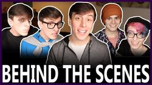

Main Episodes:
Sanders Sides
Episode 1: My True Identity
“My True Identity” is the first episode of the Sanders Sides youtube series. It was published on October 19th, 2016.
The description of the video reads “In this video, I try to delve into the many aspects of my identity to try to figure myself out a little bit more. It’s something I think is important for everyone to try every once in a while!”
Sides Featured: Creativity, Logic, Morality
Episode 2: Way Too Adult
“WAY TOO ADULT” is episode 2 season 1 of the Sanders Sides youtube series. It was published on November 21st, 2016
The description of the video reads "With the sudden realization that I can't do the acceptable amount of adult things, I come to kind of a crisis with myself. I hope you all enjoy this coming to terms!"
Sides Featured: Morality
Episode 3: Taking on Anxiety with Lilly Singh
“Taking on ANXIETY with Lilly Singh!!” is episode 3 season 1 of the Sanders Sides YouTube series. It was published on December 19th, 2016.
The description of the video reads "In this video, I discuss something that I struggle with each day, and I'm sure many of you do too! I hope the tips that we discuss help you in taking on your own anxiety whenever it comes to call!"
Sides Featured: Anxiety, Creativity
Episode 4: A New Year of Lying to Myself... in Song
“A New Year of Lying to Myself... In Song!!” is episode 4 of season 1 of the Sanders Sides youtube series. It was published on January 2nd, 2017.
The description of the video reads “So much has happened this past year, and I'm so thankful for everything!! But at the start of this new year, how much am I going to lie to myself?”
Sides Featured: Creativity, Anxiety, Morality, Logic
Episode 5: The Dark Side of Disney
“The Dark Side of Disney!” is episode 5 season 1 of the Sanders Sides youtube series. It was published on January 9th, 2017.
The description of the video reads “In this video, I talk to you all about my experience being in an episode of a Disney show!! It was AWESOME!!”
Sides Featured: Creativity, Anxiety
Episode 6: I'm in a Disney Show!
“I'M IN A DISNEY SHOW!!” is episode 6 season 1 of the Sanders Sides youtube series. It was published on January 23rd, 2017.
The description of the video reads “In this video, I talk to you all about my experience being in an episode of a Disney show!! It was AWESOME!!”
Sides Featured: Creativity, Morality, Logic
Episode 7: The Mind vs. The Heart
“The MIND vs. The HEART!” is episode 7 season 1 of the Sanders Sides youtube series. It was published on January 30th, 2017.
The description of the video reads “So many times, we have a struggle between what our mind tells is best, and what our heart wants us to do!! Hope you enjoy this little journey I go on to bring balance to all of this!”
Sides Featured: Morality, Logic
Episode 8: Alone on Valentine's Day
“Alone on VALENTINE'S DAY!” is episode 8 season 1 of the Sanders Sides youtube series. It was published on February 13th, 2017.
The description of the video reads “This year, I struggle with the idea of not having anyone to share Valentine's Day with, and the different aspects of my personality come together to see if my fate can be changed!! Hope you all enjoy!”
Sides Featured: Creativity, Anxiety, Morality, Logic
Episode 9: Losing My Motivation
“Losing My Motivation” is episode 9 season 1 of the Sanders Sides youtube series. It was published on February 28, 2017.
The description of the video reads “So many of us deal with issues like a lack of motivation and procrastination, and for this video. I’ve taken procrastination to a new level, because I wasn’t even motivated to prepare for this video! My different traits attempt to solve the mystery as to where I went wrong… Hope you all enjoy!! This video was co-written by me and my awesome friend, Joan!!”
Sides Featured: Creativity, Anxiety, Morality, Logan(Logic)
Episode 10: My Personality Q&A
“Sanders Sides Q&A” (Formally "My Personality Q&A") is episode 10 season 1 of the Sanders Sides youtube series. It was published on March 6th, 2017.
The description of the video reads “A lot of questions get asked about the different aspects of my personality, so I figured who better to answer them than them?? Hope you all enjoy this fun video!! This video was co-written by me and my awesome friend, Joan!!”
Sides Featured: Creativity, Anxiety, Morality, Logan(Logic)
Episode 11: Am I Original?
“Am I ORIGINAL?” is episode 11 season 1 of the Sanders Sides youtube series. It was published on March 21st, 2017.
The description of the video reads “As creators of anything, we tend to sometimes struggle with whether or not the piece of art or content we create could be deemed original enough, and that can sometimes inhibit us from even beginning the creation process. My creative side, Princey, decides to go into full daydream mode in order to discover the rare item, an original idea!! Hope you all enjoy! This video was co-written by my amazing friend, Joan! The rap battle was ALSO written by them!"
Sides Featured: Roman (Creativity), Anxiety, Morality, Logan (Logic)
Episode 12: My Negative Thinking
“My NEGATIVE Thinking” is episode 12 season 1 of the Sanders Sides youtube series. It was published on April 4th, 2017.
The description of the video reads “We all have moments in our lives that our brain processes as absolute disasters. Sometimes, it helps to take a step back and realize that in some instances, maybe it isn't as bad as we perceived it to be. Anxiety and Logic go head-to-head to mull over some recent experiences I had to determine if I they truly WERE as horrible as I thought they were."
Sides Featured: Anxiety, Logan (Logic)
Episode 13: Growing Up
“Growing Up” is episode 13 season 1 of the Sanders Sides youtube series. It was published on May 1st, 2017.
The description of the video reads “I just recently celebrated yet another birthday, but this one brought about a lot of questions I think many of us struggle to answer from time to time. Am I doing what I should be doing at my age? Have I matured adequately? In this video, my different sides come together to determine whether or not my heart is in the right place at this point in my life. Hope you enjoy!"
Sides Featured: Roman (Creativity), Anxiety, Patton (Morality), Logan (Logic)
Episode 14: Making Some Changes
“Making Some Changes!” is episode 14 season 1 of the Sanders Sides youtube series. It was published on May 23rd, 2017.
The description of the video reads “Changes in our lives can be scary and disorienting at times, and I've been going through my fair share of them. I find my self longing for the simpler times with familiar faces, so the different aspects of my personality step in to convince me I shouldn't be afraid of change... or stick to what is familiar. Hope you enjoy it!!"
Sides Featured: Roman (Creativity), Anxiety, Patton (Morality), Logan (Logic)
Episode 15: Becoming a Cartoon! feat. Butch Hartman!
“Becoming a CARTOON! feat. Butch Hartman!” is episode 17 season 1 of the Sanders Sides youtube series. It was published on June 9th, 2017.
The description of the video reads “By now, I think it's pretty apparent that I have an extreme passion for all things animation! Cartoons and other animation have shaped many of us since we were young, and many of them hold a special place in our hearts! But what about the possibility of becoming a cartoon?? In this video, I seek the help of the creator of The Fairly Oddparents and Danny Phantom, Butch Hartman, to do just that!! Also, be sure to check out the video I did on Butch Hartman's channel!Thank you so much to Butch Hartman for helping out with animation featured in this video!!"
Sides Featured: Roman (Creativity), Anxiety, Patton (Morality), Logan (Logic)
Episode 16: Accepting Anxiety Part 1: Accepting Anxiety
“ACCEPTING ANXIETY, Part 1/2: Excepting Anxiety!” is episode 17 season 1 of the Sanders Sides youtube series. It was published on July 10, 2017.
The description of the video reads “I don't think I've ever been described as particularly... chill. My heightened anxiety, both socially and in general has been something I've had to deal with a lot. But what if any and all fear, shame, and anxiety suddenly up and went away? In this video, it appears that this has indeed happened, and the other Sanders Sides are trying to figure out what happened, and if this is a good or bad thing... Please enjoy my Disney references, my love of slapstick, my adoration for the movie Clue, and some eerie twists in the first part of this Sanders Sides journey!"
Sides Featured: Roman (Creativity), Patton (Morality), Logan (Logic)
Episode 17: Accepting Anxiety Part 2: Can Anxiety Be Good?
“ACCEPTING ANXIETY, Part 2/2: Can Anxiety Be Good?” is episode 18 season 1 of the Sanders Sides youtube series. It was published on July 15, 2017.
The description of the video reads “I don't think I've ever been described as particularly... chill. My heightened anxiety, both socially and in general has been something I've had to deal with a lot. But what if any and all fear, shame, and anxiety suddenly up and went away? In this Sanders Sides video, that very thing has happened, and we do our best to reason out the potential upsides to anxiety, whether or not its a good thing to have it back. I want to thank my absolutely AMAZING friends, Joan and Talyn. Not only did they help me write this episode, they helped me create props, build set, and assisted with special effects. They also offered their own insight into having increased anxiety and panic attacks. Their input was invaluable to the creation of this video."
Sides Featured: Roman (Creativity), Virgil (Anxiety), Patton (Morality), Logan (Logic)
Episode 18: Fitting In (Hogwarts Houses)
“Fitting In (Hogwarts Houses!)” is episode 1 season 2 (19th episode total) of the Sanders Sides youtube series. It was published on September 1st, 2017.
The description of the video reads “Standing out can sometimes seem like a scary and isolating thing, and recently, I've decided to go a little outside of my comfort zone with coloring my hair. Was this an intimidating move for me? Of course! And my anxiety has something to say about it. In this video, I parcel out what it means to stand out and fit in using my good pal, Harry Potter, and the sorting process of Hogwarts to help bring a little clarity as to where the sides all would belong. Hope you enjoy! SLIGHT SPOILER WARNINGS IF YOU HAVEN'T READ THE BOOKS. I want to thank my absolutely AMAZING friends, Joan and Talyn. Joan assisted me with writing the script and they both helped to create some of the costume pieces in this video and dedicated countless hours to the production!”
Sides Featured: Roman (Creativity), Virgil (Anxiety), Patton (Morality), Logan (Logic)

Episode 19: Moving On Part 1: Exploring Nostalgia
“MOVING ON, Part 1/2: Exploring Nostalgia!” is episode 2 season 2 (episode 20 total) of the Sanders Sides youtube series. It was published on October 3, 2017.
The description of the video reads “Can looking back on the past help or hinder us? For many people, that can be sort of a complicated question. And in this video, I struggle with moving on from a very important part of my past. Is this a dilemma that can be worked out with the Sides? Or are the workings of the heart just too enigmatic? Hope you enjoy! I want to thank my absolutely AMAZING friends, Joan and Talyn. Joan assisted me with writing the script, and they BOTH helped to create Patton's Room and edit this video, dedicating COUNTLESS hours to the production!"
Sides Featured: Roman (Creativity), Virgil (Anxiety), Patton (Morality), Logan (Logic)
Episode 20: Moving On Part 2: Dealing with a Breakup
“MOVING ON, Part 2/2: Dealing With a Breakup” is episode 3 season 2 (episode 21 total) of the Sanders Sides youtube series. It was published on October 25, 2017.
The description of the video reads “Losing important people in our life can have an incredible effect on our moods and outlook. After delving into Patton’s room and exploring nostalgia in order to try and improve my outlook on the future, it seems to have the opposite effect for me and my high anxiety. With a grieving heart and logic out of the picture, what is the next step to take in order to try to move on? Hope you all enjoy this part 2! I want to thank my absolutely AMAZING friends, Joan and Talyn. Joan assisted me with writing the script, and they BOTH helped to create Patton's Room AND edit this video, dedicating COUNTLESS hours to the production! It was most definitely a labor of love, and I can't thank them enough."
Sides Featured: Roman (Creativity), Virgil (Anxiety), Patton (Morality), Logan (Logic)
Episode 21: The Sanders Sides 12 Days of Christmas
“The Sanders Sides 12 DAYS OF CHRISTMAS!” is episode 4 season 2 (22nd episode total) of the Sanders Sides youtube series. It was published on December 24th, 2017.
The description of the video reads “It’s Christmas time, and I wanted to make sure the time of year was celebrated with a little bit of creative gusto! Roman and Patton have each worked up a little special way to enjoy the holiday right, so hopefully all goes well!! And I hope you all enjoy this little end-of-year holiday gift! We appreciate all your amazing support! Thank you SO SO MUCH to my amazing friends, Joan and Talyn who worked SO HARD to make this video happen before Christmas!! From editing, to set, to props, to green screen, to lighting, to Joan's co-writing, they have been incremental to this project and so many Sanders Sides videos!”
Sides Featured: Roman (Creativity), Virgil (Anxiety), Patton (Morality), Logan (Logic)

Episode 22: Can Lying be Good??
“Can LYING Be Good??” is episode 5 season 2 (23rd episode total) of the Sanders Sides youtube series. It was published on February 3rd, 2018.
The description of the video reads “Everyone, at one time or another, has been confronted with the moral dilemma of telling the truth to a friend or loved one. Are there caveats to the moral principle of honesty? Are there situations where lying is the right thing to do? In this video, one such dilemma is encountered and the Sanders Sides are all trying to get down to the bottom of what's the truth on lying! This video is a DOOZY. Hope you enjoy! Thank you so much to my AMAZING friends, Joan and Talyn, for helping me with the filming, special effects, props, makeup, and costumes included in this video!! So much hard work from both of them!!”
Sides Featured: Roman (Creativity), Virgil (Anxiety), Patton (Morality), Logan (Logic), Deciet
Episode 23: Why Do We Get Out of Bed in the Morning?
“Why Do We Get Out of Bed in the Morning?” is episode 6 of season 2 of the Sanders Sides youtube series. It was published on April 12th, 2018.
The description of the video reads “Some days, we just lack the drive to get things done. Whether it's due to energy, focus, or a lack of motivating factor, this dilemma can really inhibit us from living our fullest. In this video, Logan and Roman try to amend this lack of drive by trying to remind Thomas of the most important reason behind why he does everything he does... but what IS the most important reason? Hope you all enjoy!!"
Sides Featured: Roman (Creativity), Logan (Logic)
Episode 24: Crofter's: The Musical
“Crofters - THE MUSICAL!” is episode 7 season 2 of the Sanders Sides youtube series. It was published on Apr 19, 2018.
The description of the video reads “It's the magical rags-to-riches tale as old as time: man mentions a sweet and humble jelly brand as a joke in a YouTube video, viewers thoroughly embrace joke, jelly brand turns out to be super cool with the whole thing, man ends up partnering with jelly brand to create his own flavor of jelly. That's right, we've officially partnered with Crofter's and Logan and Roman couldn't be happier! Hope you enjoy!! Special thanks to Crofter's for making all of this possible!! Still can't believe it's real!! You can get your own jar of Logan's Berry jelly here!”
Sides Featured: Roman (Creativity), Logan (Logic) with cameo from Virgil (Anxiety), Patton (Morality)
Episode 25: Learning New Things About Ourselves
“Learning New Things About Ourselves” is episode 8 season 2 of the Sanders Sides youtube series. It was published on October 29, 2018.
The description of the video reads “Many times, we find ourselves with feelings we don't quite understand or have difficulty processing. A lot of those feelings can be worked out with the right kind of critical thinking. In this video, Thomas has been feeling bad and doesn't quite know why. The Sides are pointing fingers and there's no end in sight. It's time to solve the problem by approaching it from a new angle! Hope you all enjoy!! A HUGE thank you to my amazing friend and co-writer, Joan, for helping to make this video possible! We couldn't have done it without their puppet designs, contributions to this script, AND the writing of the song! Also, an ENORMOUS thank you to Adam Kreutinger, who helped create all the amazing puppets featured in this video! And a GIGANTIC thank you to Nate Begle for puppeteering all of the characters in today's video! A TITANIC thank you to my friend, Jamahl, for helping to arrange the song Joan created, as well as playing piano and bass for the song, "Incomplete"! Also, a BIG thank you to Brendan Sweeney for contributing the horn you heard in the song, "Incomplete"! And, of course, a GINORMOUS thank you to Foti for recording, adding drums to, and mixing "Incomplete"! Another awesome job to him! Also, GARGANTUAN thanks to my friend, Quil, for helping to direct some of the scenes for the video! Also, a thank you to my friends, AJ, Kenny, and Talyn, for assisting in the puppeteering of the final shot! Also, a thank you to Talyn for pitching the idea of a Sanders Sides puppet episode, as well as adding the little paws to Patton's sweater!”
Sides Featured: Roman (Creativity), Virgil (Anxiety), Patton (Morality), Logan (Logic)
Episode 26: Embarrassing Phases: The Nightmare Instead of Christmas!
“EMBARRASSING PHASES: The Nightmare Instead Of Christmas!” is episode 9 season 2 of the Sanders Sides youtube series. It was published on December 24, 2018.
The description of the video reads "It's easy to look back on our past selves and shudder at who we once were. Likewise, it's very easy for people to look at us and tell us what we're passionate about here and now is just a passing phase and it's inconsequential. But different phases in our life mean so much more. This Christmas, Virgil deals with a very similar problem as he attempts to keep the spirit of Halloween going well into December! Hope you all enjoy!! I want to give a HUGE HUGE HUGE thank you to my main partner, the sole director of this video, contributor to the script, special graphical effects editor, makeup artist for Roman, costume contributor to Virgil, even the painter of the foam Frankenstein piece, Joan. Their aid, as in the majority of Sanders Sides videos but especially in this one, was absolutely necessary to get this video done!"
Sides Featured: Roman (Creativity), Virgil (Anxiety), Patton (Morality), Logan (Logic)
Episode 27: Selfishness v. Selflessness
“Selfishness v. Selflessness” is episode 10 season 2 of the Sanders Sides youtube series. It was published on March 31, 2019.
The description of the video reads "There are so many moments in our lives where we’re faced between serving ourselves or serving others, and many times, to get what we want, we may tend towards deception to achieve it. In this video, Deceit returns and presents his case for why we shouldn’t inhibit these tendencies, and Thomas has a conflict of conscience! Hope you enjoy the turmoil that ensues! A HUGE thank you to the writers of this episode!! You all made an incredible story!! And a GIGANTIC thank you to my friend, Talyn, who is responsible for Deceit's makeup!! That makeup isn't easy and they had to do it multiple times as identically as possible during the shoot. They're INCREDIBLE! Also, a BIG thank you to my friends who helped create the specialized costume pieces for the video!! Also, a big thank you to our friends, Esteban Alvarez III and James von Hollen, who we consulted while making this video! Also, a big thank you to my friends, Lev and Joan, for creating the thumbnail for this episode!"
Sides Featured: Roman (Creativity), Virgil (Anxiety), Patton (Morality), Logan (Logic), Deciet
Episode 28: Dealing with Intrusive Thoughts
“Dealing with INTRUSIVE THOUGHTS” is episode 11 season 2 of the Sanders Sides YouTube series. It was published on June 25th, 2019.
The description of the video reads "Sometimes, the most troubling issues we face are ones we’re too frightened or hesitant to talk about with others. In this episode, Thomas deals with some troubling thoughts from the night before, and it has the Sides at odds with how to address the situation, if at all. And it doesn’t help that a new force is bringing all of this forbidden thinking about. Hope you all enjoy! Special thanks to all the incredible individuals who worked tirelessly on this project to make it happen!!"
Sides Featured: Roman (Creativity), Virgil (Anxiety), Patton (Morality), Logan (Logic), Remus (The Duke)
Episode 29: Putting Others First - Selfishness v. Selflessness Redux
“Putting Others First - Selfishness v. Selflessness Redux” is episode 12 season 2 of the Sanders Sides YouTube series. It was published on May 1st, 2020. While not chronologically so, it is the direct sequel of Selfishness v. Selflessness, as its title implies.
The description of the video reads "**Disclosure: Filming for this episode of Sanders Sides was done before the stay at home order was put in place for Covid-19** At long last, the day is here. Thomas was torn between going to a callback and potentially fulfilling his dream of being a part of a huge cinematic project, or going to two of his best friends’ wedding to be there for them and support them. And, even though, he’s sure he made the right choice, something feels off. After all is said and done, is there something to be said for putting others before yourself? I wanna give a HUGE thank you to the director of this episode, Joan, who takes so much of their time to help get these performances outta me and I could not be more grateful!"
Sides Featured: Roman (Creativity), Patton (Morality), Logan (Logic), Janus (Deciet)
Side Episodes
Sanders Asides
Are There Healthy Distractions?
“Are There Healthy Distractions?” is the first episode of the Sanders Asides youtube series. It was published on November 22nd, 2019.
The description of the video reads "What to do when anxiety has a hold and you just can't let... it... leave? Obviously, I deal with that quite a bit, and this evening, I turn to my number one distraction from the plagues of life: movies! My Sides are mostly on board with this... mostly. Are distractions like these helpful in anxiety-ridden situations like these?"
Sides Featured: Roman (Creativity), Virgil (Anxiety), Patton (Morality), Logan (Logic), Remus (The Duke), Janus (Deciet)

Behind the Scenes/Bloopers
Related Sanders Sides content
BLOOPER REEL!
"BLOOPER REEL!" is the first Behind the Scenes video created for the Sanders Sides series. It was published on May 26, 2017.
The description of the video reads "Many of you love the Sanders Sides videos and also many of you have requested seeing some of the takes that DON'T make it into the final video, so here's my first attempt at putting together a blooper reel out of some of the Sanders Sides vlogs!! Please enjoy just SOME of the countless mistakes we've made!! Thank you to Drew Gooden for helping with the thumbnail for this video! Thanks to my amazing friends who are also in this!"
Sanders Sides - BEHIND THE SCENES Q&A!
"Sanders Sides - BEHIND THE SCENES Q&A!" is the 2nd Behind the Scenes video created for the Sanders Sides series. It was published on July 19, 2017.
The description of the video reads "You've had lots of questions about what goes into the making of each Sanders Sides video, so Joan, Talyn, and I thought it would be a good idea to delve into the origins and makings of each video to shed a little more light on to it all! Thank you all for your questions and curiosity!! Thank you so much to my amazing friends, Joan and Talyn, for joining me for this video, as well as all their contributions to each Sanders Sides video!!"
BLOOPER REEL!! The Bloop Strikes Back!
"BLOOPER REEL!! The Bloop Strikes Back!" is the 3rd Behind the Scenes video created for the Sanders Sides series. It was published on February 10, 2018.
The description of the video reads "Since the last blooper reel, there have been PLENTY of mistakes and outtakes that you never got to see... until NOW! Please prepare yourselves for excess laughing, improv, cursing, and just generally having no clue what is going on as you witness our second collection of Bloopers! Thank you to my friend, Talyn for helping to create the thumbnail for the video! Thank you, once again, to all the friends who were featured in this video that donated their time to being in the original videos!"
5 Sanders Sides Behind the Scenes Facts (Learning New Things About Ourselves)
"5 Sanders Sides Behind the Scenes Facts (Learning New Things About Ourselves)" is the 5th Behind the Scenes video created for the Sanders Sides series. It was published on November 27th, 2018.
The description of the video reads "The latest Sanders Sides, Learning New Things About Ourselves, was an EPIC journey from concept to creation. So much so that I really wanted to bring you guys behind the curtain on this one to see what went into it! And stay tuned for an extended scene from the video! Hope you enjoy! HUGE thank you to my friends, Joan and Talyn, who helped me out with this video, and all their help with the Sanders Sides series!! Once again, another huge thank you to Adam Kreutinger and Nate Begle for all of their contributions to and assistance with "Learning New Things About Ourselves"!"
BLOOPER REEL!! Return of the Bloop! (Sanders Sides)
"BLOOPER REEL!! Return of the Bloop! (Sanders Sides)" is the 6th Behind the Scenes video created for the Sanders Sides series. It was published on May 21st, 2019.
The description of the video reads "** Warning: lots of censored potty language and inappropriate improvisation in this video! ** It was about time we brought to you another compilation of our failings!! And there’s been so /many/ mistakes since the last one, this video is only focusing on the last three Sanders Sides episodes! Hope you enjoy this smorgasbord of silliness!! Bloopers from this episode came from the following Sanders Sides episodes: Learning New Things About Ourselves, EMBARRASSING PHASES: The Nightmare Instead of Christmas!, Selfishness v. Selflessness. HUGE thank you to my friends, Quil and Adri, who went through the TONS of raw footage from these episodes and found all these moments to make this video possible! Also, a GIGANTIC thank you to my friend, Dahlia, who cut up all the raw footage for me to then be able to arrange it! Also, I think you can see through this raw footage just how much time Joan also dedicates to the filming of these videos! I wanna especially thank them for being there so much, helping me make these videos happen!! And, of course, I want to give a HUMONGOUS thank you, once again, to everyone else who was helping out with these Sanders Sides episodes that you saw in this raw footage! And a GINORMOUS thank you, once again, to Lev, for helping to create the thumbnail for this video!!"
BLOOPER REEL!! The Bloop Awakens!
"BLOOPER REEL!! The Bloop Awakens (Sanders Sides)" is the 7th Behind the Scenes video created for the Sanders Sides series. It was published on February 29, 2020.
The description of the video reads "WARNING: This video has a LOT of foul language, innuendo, and conversation (a lot of which was probably inspired by discussions of intrusive thoughts)! Please watch with caution!! You guys have all been asking for more Sanders Sides bloopers, so we finally bring you our blunders, shenanigans, and behind-the-scenes footage from the most recent Sanders Sides and Sanders Asides episodes, Dealing with INTRUSIVE THOUGHTS and Are There Healthy Distractions? Strangely, this video only encompasses two videos, but is our longest blooper reel yet!! I don’t know if that’s because we’re getting sillier while we film, or if I just wanna show you more of what happens behind the scenes, but, either way, I hope you don’t mind!! Please enjoy this chaotic but fun video!"